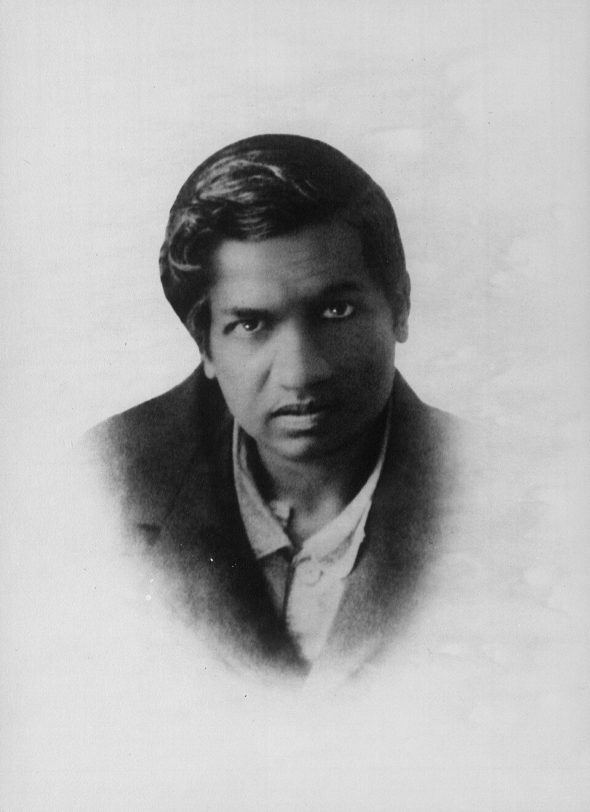

Early Life
Srinivasa Ramanujan was born on 22 December 1887 in Erode, India. From a young age, he showed an extraordinary interest in mathematics and developed many mathematical ideas largely through self-study.
A TRIBUTE TO
1887 — 1920
An extraordinary mathematician whose work continues to influence the world of mathematics.

HIS STORY
Srinivasa Ramanujan was born on 22 December 1887 in Erode, India. From a young age, he showed an extraordinary interest in mathematics and developed many mathematical ideas largely through self-study.
In 1913, Ramanujan began corresponding with the British mathematician G. H. Hardy. Impressed by his mathematical work, Hardy invited him to Cambridge, where Ramanujan continued his research.
Ramanujan made important contributions to number theory, infinite series, continued fractions and mathematical analysis. Many of his results were developed without formal university training in mathematics.
Despite facing serious health problems during his final years, Ramanujan continued his mathematical work. He returned to India in 1919 and died on 26 April 1920 at the age of 32.
MATHEMATICAL LEGACY
The number 1729 is famously associated with Ramanujan and is known as the smallest number expressible as the sum of two positive cubes in two different ways.
Ramanujan made significant contributions to the study of integer partitions and discovered remarkable patterns and relationships within partition numbers.
His work on infinite series produced many remarkable formulas and continues to be studied in mathematics today.
TIMELINE
Srinivasa Ramanujan was born on 22 December 1887 in Erode, India.
Ramanujan sent his mathematical work to G. H. Hardy at Cambridge, beginning an important mathematical collaboration.
Ramanujan travelled to England and began working with Hardy at the University of Cambridge.
Ramanujan was elected a Fellow of the Royal Society for his significant contributions to mathematics.
Ramanujan died on 26 April 1920 at the age of 32, leaving behind a remarkable body of mathematical work.
LEGACY
Ramanujan's life was short, but his mathematical discoveries left an enduring mark on the world. His notebooks and ideas continue to inspire mathematicians and students around the globe.